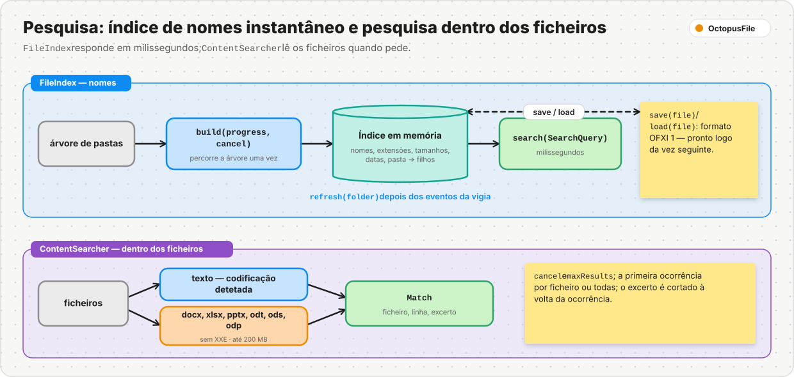
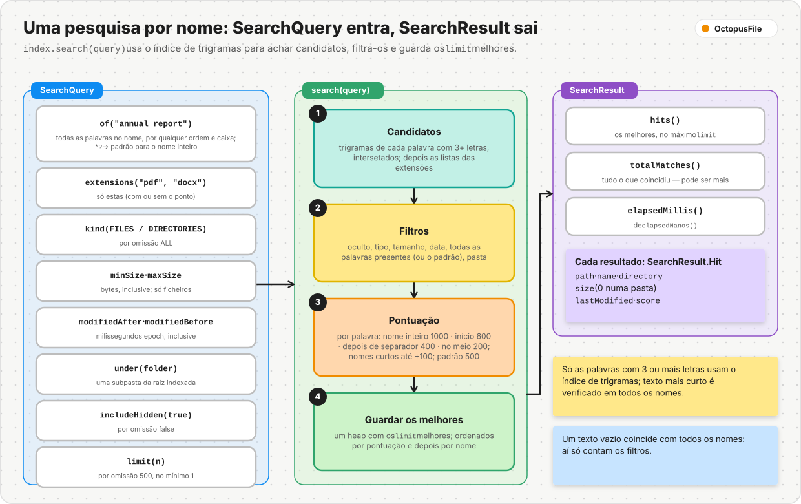
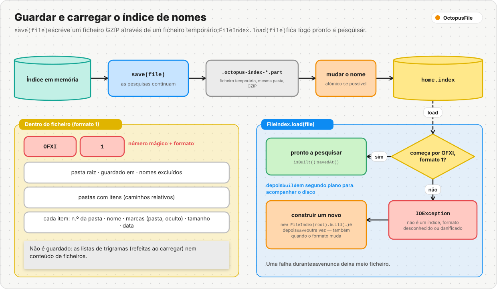
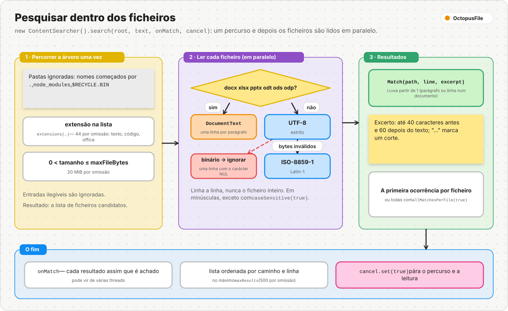
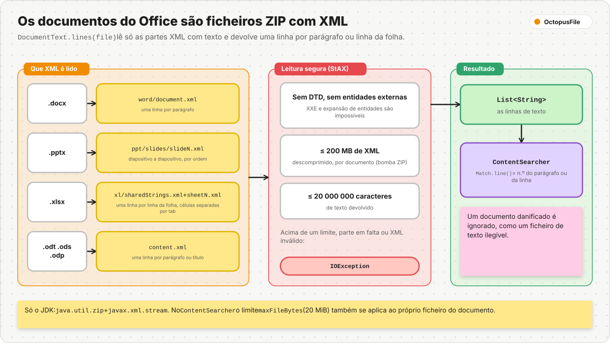

Pesquisa: índice de nomes e pesquisa no conteúdo

Pesquisa instantânea por nome — FileIndex#

Um índice em memória de todos os nomes dentro de uma pasta. Os nomes são guardados em colunas (sem um objeto por ficheiro) com um índice invertido de trigramas, por isso uma pesquisa custa o número de candidatos, não o número de ficheiros.
javaFileIndex index = new FileIndex(home).build(null, new AtomicBoolean());
SearchResult result = index.search(SearchQuery.of("report").extensions("pdf").limit(50));
for (SearchResult.Hit h : result.hits()) {
System.out.println(h.path() + " " + h.size());
}
SearchQuery | Significado |
|---|---|
of("annual report") | cada palavra tem de aparecer no nome (sem distinguir maiúsculas de minúsculas); * e ? são carateres universais |
extensions("pdf", "docx") | só estas extensões |
kind(Kind.FILES / DIRECTORIES) | só ficheiros ou só pastas |
minSize, maxSize, modifiedAfter, modifiedBefore | tamanho e data |
under(folder) | só dentro de uma subpasta da raiz indexada |
includeHidden(true), limit(n) | itens ocultos, número máximo de resultados |
Outras chamadas: build(progress, cancel) constrói em paralelo (uma tarefa por pasta de topo) e pode ser cancelado; refresh(dir) volta a ler uma pasta depois de uma alteração; modifiedBetween(from, to, limit) lista os ficheiros alterados num período, dos mais recentes para os mais antigos (o FileExp usa-o na sua cronologia de atividade); extensionStats() dá contagens e bytes por extensão.
O tempo de construção é dominado pelo disco. A memória cresce com o número de nomes (colunas mais as listas de trigramas); meça-a para as suas pastas antes de indexar uma unidade inteira.
Guardar o índice (desde a 1.4)#

save(file) escreve o índice num ficheiro compacto e FileIndex.load(file) lê-o de volta muito mais depressa do que percorrer o disco, por isso uma aplicação pode pesquisar logo ao arrancar. Durante o build, os dados carregados continuam pesquisáveis até o novo índice estar pronto.
javaPath cache = appData.resolve("home.index");
FileIndex index = Files.exists(cache) ? FileIndex.load(cache) // instant
: new FileIndex(home).build(null, null);
// ... search at once; then, in the background:
index.build(null, new AtomicBoolean()); // catch up with the disk
index.save(cache);
O ficheiro guarda nomes, tamanhos e datas (nenhum conteúdo). É escrito num ficheiro temporário e depois renomeado, por isso uma falha nunca deixa meio ficheiro; um ficheiro danificado ou que não seja um índice é recusado com uma IOException. savedAt() diz quando foi guardado.
Pesquisa dentro dos ficheiros — ContentSearcher#

Encontra os ficheiros de texto que contêm uma cadeia de carateres, em paralelo, lendo linha a linha (os ficheiros nunca são carregados por inteiro), primeiro em UTF-8 e em Latin-1 como alternativa, ignorando os ficheiros binários.
javaList<ContentSearcher.Match> matches = new ContentSearcher().maxResults(100)
.search(home, "total: 1.250", null, new AtomicBoolean());
for (ContentSearcher.Match m : matches) {
System.out.println(m.path() + ":" + m.line() + " " + m.excerpt());
}
Opções: caseSensitive, allMatchesPerFile, maxFileBytes (20 MB por omissão), extensions(...) (cerca de 40 extensões de texto e de código por omissão). A callback onMatch recebe os resultados à medida que são encontrados; ative o AtomicBoolean para parar.
Documentos do Office (desde a 1.4)#

O ContentSearcher também procura dentro de ficheiros do Word, Excel, PowerPoint e LibreOffice (docx, xlsx, pptx, odt, ods, odp); aí line() é o número do parágrafo, ou da linha numa folha de cálculo. DocumentText.lines(file) dá esse texto diretamente. Usa só o JDK (os ficheiros são ZIP + XML), nunca lê DTDs nem entidades externas e descomprime no máximo 200 MB de XML por documento. Documentos danificados são ignorados.
DocExamplesTest